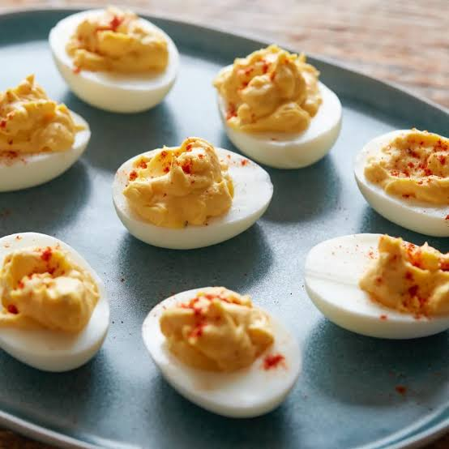
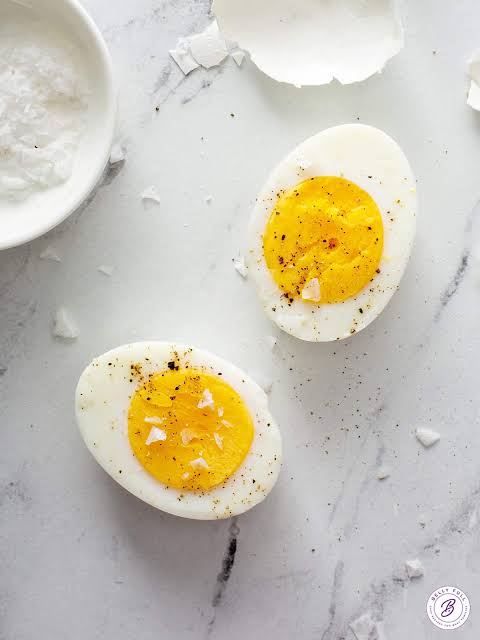

Without-Heat Eggs
Without-Heat Eggs have eggs such as Deviled eggs, egg salads, and hard-boiled!
Some may not fully agree about hard-boiled being in the "without heat" area however
I say they are as they are almost always served cold and i made this website so im right
If i were to list them on my enjoyment it would be...
- Deviled Eggs
- Hard boiled Eggs
- Egg Salads
I love me some Deviled Eggs but i dont like salads all that much even if they have eggs.

Go on and try the links at the top of the page to see different options!
You can try cooked food with eggs such as easy over or scrambled.
You can also try Not-cooked eggs, such as deviled eggs or egg salads.
